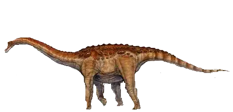

Rapetosaurus
Lagarto del gigante Rapeto
Saurópodo/Titanosauria
Dinosaurio herbívoro ubicado en Madagascar.
El Rapetosaurus fue catalogado en el año 2001 y vivió hace 70 millones de años. Su nombre alude a Rapeto, un gigante del folclore de Madagascar. Se halló un esqueleto casi completo de un juvenil, con el cráneo incluido, algo muy raro entre los titanosaurios, y eso permitió conocer mucho mejor a todo el grupo.
Altura: 5m
longitud: 15m
Peso: 8000Kg
velocidad: 8Km/h
periodo: Cretácico superior
Especímenes: Varios
